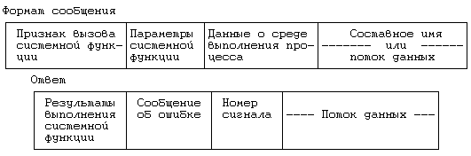
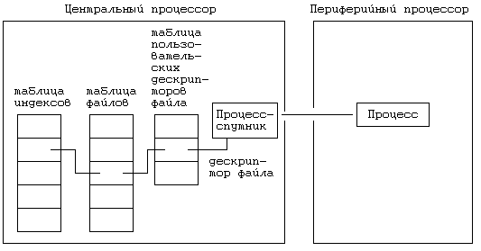
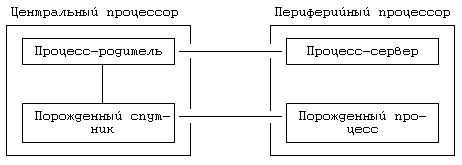
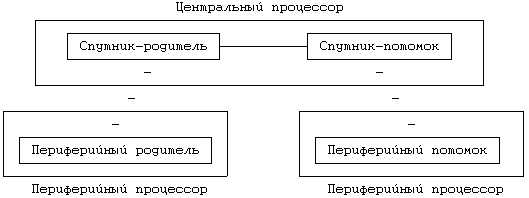
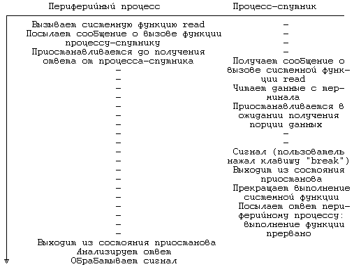

Рисунок 13.3. Форматы сообщений
Когда периферийный процесс вызывает системную функцию, которую можно обработать локально, ядру нет надобности посылать запрос процессу-спутнику. Так, например, в целях получения дополнительной памяти процесс может вызвать для локального исполнения функцию sbrk. Однако, если требуются услуги центрального процессора, например, чтобы открыть файл, ядро кодирует информацию о передаваемых вызванной функции параметрах и условиях выполнения процесса в некое сообщение, посылаемое процессу-спутнику (Рисунок 13.3). Сообщение включает в себя признак, из которого следует, что системная функция выполняется процессом-спутником от имени клиента, передаваемые функции параметры и данные о среде выполнения процесса (например, пользовательский и групповой коды идентификации), которые для разных функций различны. Оставшаяся часть сообщения представляет собой данные переменной длины (например, составное имя файла или данные, предназначенные для записи функцией write).
Процесс-спутник ждет поступления запросов от периферийного процесса; при получении запроса он декодирует сообщение, определяет тип системной функции, исполняет ее и преобразует результаты в ответ, посылаемый периферийному процессу. Ответ, помимо результатов выполнения системной функции, включает в себя сообщение об ошибке (если она имела место), номер сигнала и массив данных переменной длины, содержащий, например, информацию, прочитанную из файла. Периферийный процесс приостанавливается до получения ответа, получив его, производит расшифровку и передает результаты пользователю. Такова общая схема обработки обращений к операционной системе; теперь перейдем к более детальному рассмотрению отдельных функций.
Для того, чтобы объяснить, каким образом работает периферийная система, рассмотрим ряд функций: getppid, open, write, fork, exit и signal. Функция getppid довольно проста, поскольку она связана с простыми формами запроса и ответа, которыми обмениваются периферийный и центральный процессоры. Ядро на периферийном процессоре формирует сообщение, имеющее признак, из которого следует, что запрашиваемой функцией является функция getppid, и посылает запрос центральному процессору. Процесс-спутник на центральном процессоре читает сообщение с периферийного процессора, расшифровывает тип системной функции, исполняет ее и получает идентификатор своего родителя. Затем он формирует ответ и передает его периферийному процессу, находящемуся в состоянии ожидания на другом конце линии связи. Когда периферийный процессор получает ответ, он передает его процессу, вызвавшему системную функцию getppid. Если же периферийный процесс хранит данные (такие, как идентификатор процесса-родителя) в локальной памяти, ему вообще не придется связываться со своим спутником.
Если производится обращение к системной функции open, периферийный процесс посылает своему спутнику соответствующее сообщение, которое включает имя файла и другие параметры. В случае успеха процесс-спутник выделяет индекс и точку входа в таблицу файлов, отводит запись в таблице пользовательских дескрипторов файла в своем пространстве и возвращает дескриптор файла периферийному процессу. Все это время на другом конце линии связи периферийный процесс ждет ответа. У него в распоряжении нет никаких структур, которые хранили бы информацию об открываемом файле; возвращаемый функцией open дескриптор представляет собой указатель на запись в таблице пользовательских дескрипторов файла, принадлежащей процессу-спутнику. Результаты выполнения функции показаны на Рисунке 13.4.

Рисунок 13.4. Вызов функции open из периферийного процесса
Если производится обращение к системной функции write, периферийный процессор формирует сообщение, состоящее из признака функции write, дескриптора файла и объема записываемых данных. Затем из пространства периферийного процесса он по линии связи копирует данные процессу-спутнику. Процесс-спутник расшифровывает полученное сообщение, читает данные из линии связи и записывает их в соответствующий файл (в качестве указателя на индекс которого и запись о котором в таблице файлов используется содержащийся в сообщении дескриптор); все указанные действия выполняются на центральном процессоре. По окончании работы процесс-спутник передает периферийному процессу посылку, подтверждающую прием сообщения и содержащую количество байт данных, успешно переписанных в файл. Операция read выполняется аналогично; спутник информирует периферийный процесс о количестве реально прочитанных байт (в случае чтения данных с терминала или из канала это количество не всегда совпадает с количеством, указанным в запросе). Для выполнения как той, так и другой функции может потребоваться многократная пересылка информационных сообщений по сети, что определяется объемом пересылаемых данных и размерами сетевых пакетов.
Единственной функцией, требующей внесения изменений при работе на центральном процессоре, является системная функция fork. Когда процесс исполняет эту функцию на ЦП, ядро выбирает для него периферийный процессор и посылает сообщение специальному процессу -серверу, информируя последний о том, что собирается приступить к выгрузке текущего процесса. Предполагая, что сервер принял запрос, ядро с помощью функции fork создает новый периферийный процесс, выделяя запись в таблице процессов и адресное пространство. Центральный процессор выгружает копию процесса, вызвавшего функцию fork, на периферийный процессор, затирая только что выделенное адресное пространство, порождает локальный спутник для связи с новым периферийным процессом и посылает на периферию сообщение о необходимости инициализации счетчика команд для нового процесса. Процесс-спутник (на ЦП) является потомком процесса, вызвавшего функцию fork; периферийный процесс с технической точки зрения выступает потомком процесса-сервера, но по логике он является потомком процесса, вызвавшего функцию fork. Процесс-сервер не имеет логической связи с потомком по завершении функции fork; единственная задача сервера состоит в оказании помощи при выгрузке потомка. Из-за сильной связи между компонентами системы (периферийные процессоры не располагают автономией) периферийный процесс и процесс-спутник имеют один и тот же код идентификации. Взаимосвязь между процессами показана на Рисунке 13.5: непрерывной линией показана связь типа "родитель-потомок", пунктиром - связь между равноправными партнерами.

Рисунок 13.5. Выполнение функции fork на центральном процессоре
Когда процесс исполняет функцию fork на периферийном процессоре, он посылает сообщение своему спутнику на ЦП, который и исполняет после этого всю вышеописанную последовательность действий. Спутник выбирает новый периферийный процессор и делает необходимые приготовления к выгрузке образа старого процесса: посылает периферийному процессу-родителю запрос на чтение его образа, в ответ на который на другом конце канала связи начинается передача запрашиваемых данных. Спутник считывает передаваемый образ и переписывает его периферийному потомку. Когда выгрузка образа заканчивается, процесс-спутник исполняет функцию fork, создавая своего потомка на ЦП, и передает значение счетчика команд периферийному потомку, чтобы последний знал, с какого адреса начинать выполнение. Очевидно, было бы лучше, если бы потомок процесса-спутника назначался периферийному потомку в качестве родителя, однако в нашем случае порожденные процессы получают возможность выполняться и на других периферийных процессорах, а не только на том, на котором они созданы. Взаимосвязь между процессами по завершении функции fork показана на Рисунке 13.6. Когда периферийный процесс завершает свою работу, он посылает соответствующее сообщение процессу-спутнику и тот тоже завершается. От процесса-спутника инициатива завершения работы исходить не может.

Рисунок 13.6. Выполнение функции fork на периферийном процессоре
И в многопроцессорной, и в однопроцессорной системах процесс должен реагировать на сигналы одинаково: процесс либо завершает выполнение системной функции до проверки сигналов, либо, напротив, получив сигнал, незамедлительно выходит из состояния приостанова и резко прерывает работу системной функции, если это согласуется с приоритетом, с которым он был приостановлен. Поскольку процесс-спутник выполняет системные функции от имени периферийного процесса, он должен реагировать на сигналы, согласуя свои действия с последним. Если в однопроцессорной системе сигнал заставляет процесс завершить выполнение функции аварийно, процессу-спутнику в многопроцессорной системе следует вести себя тем же образом. То же самое можно сказать и о том случае, когда сигнал побуждает процесс к завершению своей работы с помощью функции exit: периферийный процесс завершается и посылает соответствующее сообщение процессу-спутнику, который, разумеется, тоже завершается.
Когда периферийный процесс вызывает системную функцию signal, он сохраняет текущую информацию в локальных таблицах и посылает сообщение своему спутнику, информируя его о том, следует ли указанный сигнал принимать или же игнорировать. Процессу-спутнику безразлично, выполнять ли перехват сигнала или действие по умолчанию. Реакция процесса на сигнал зависит от трех факторов (Рисунок 13.7): поступает ли сигнал во время выполнения процессом системной функции, сделано ли с помощью функции signal указание об игнорировании сигнала, возникает ли сигнал на этом же периферийном процессоре или на каком-то другом. Перейдем к рассмотрению различных возможностей.
алгоритм sighandle /* алгоритм обработки сигналов */
входная информация: отсутствует
выходная информация: отсутствует
{
если (текущий процесс является чьим-то спутником или
имеет прототипа)
{
если (сигнал игнорируется)
вернуть управление;
если (сигнал поступил во время выполнения системной
функции)
поставить сигнал перед процессом-спутником;
в противном случае
послать сообщение о сигнале периферийному процес-
су;
}
в противном случае /* периферийный процесс */
{
/* поступил ли сигнал во время выполнения системной
* функции или нет
*/
послать сигнал процессу-спутнику;
}
}
алгоритм satellite_end_of_syscall /* завершение систем-
* ной функции, выз-
* ванной периферийным
* процессом */
входная информация: отсутствует
выходная информация: отсутствует
{
если (во время выполнения системной функции поступило
прерывание)
послать периферийному процессу сообщение о прерыва-
нии, сигнал;
в противном случае /* выполнение системной функции не
* прерывалось */
послать ответ: включить флаг, показывающий поступле-
ние сигнала;
}
|
Рисунок 13.7. Обработка сигналов в периферийной системе
Допустим, что периферийный процесс приостановил свою работу на то время, пока процесс-спутник исполняет системную функцию от его имени. Если сигнал возникает в другом месте, процесс-спутник обнаруживает его раньше, чем периферийный процесс. Возможны три случая.
- Если в ожидании некоторого события процесс-спутник не переходил в состояние приостанова, из которого он вышел бы по получении сигнала, он выполняет системную функцию до конца, посылает результаты выполнения периферийному процессу и показывает, какой из сигналов им был получен.
- Если процесс сделал указание об игнорировании сигнала данного типа, спутник продолжает следовать алгоритму выполнения системной функции, не выходя из состояния приостанова по longjmp. В ответе, посылаемом периферийному процессу, сообщение о получении сигнала будет отсутствовать.
- Если по получении сигнала процесс-спутник прерывает выполнение системной функции (по longjmp), он информирует об этом периферийный процесс и сообщает ему номер сигнала.
Периферийный процесс ищет в поступившем ответе сведения о получении сигналов и в случае обнаружения таковых производит обработку сигналов перед выходом из системной функции. Таким образом, поведение процесса в многопроцессорной системе в точности соответствует его поведению в однопроцессорной системе: он или завершает свою работу, не выходя из режима ядра, или обращается к пользовательской функции обработки сигнала, или игнорирует сигнал и успешно завершает выполнение системной функции.

Рисунок 13.8. Прерывание во время выполнения системной функции
Предположим, например, что периферийный процесс вызывает функцию чтения с терминала, связанного с центральным процессором, и приостанавливает свою работу на время выполнения функции процессом-спутником (Рисунок 13.8). Если пользователь нажимает клавишу прерывания (break), ядро ЦП посылает процессу-спутнику соответствующий сигнал. Если спутник находился в состоянии приостанова в ожидании ввода с терминала порции данных, он немедленно выходит из этого состояния и прекращает выполнение функции read. В своем ответе на запрос периферийного процесса спутник сообщает код ошибки и номер сигнала, соответствующий прерыванию. Периферийный процесс анализирует ответ и, поскольку в сообщении говорится о поступлении сигнала прерывания, отправляет сигнал самому себе. Перед выходом из функции read периферийное ядро осуществляет проверку поступления сигналов, обнаруживает сигнал прерывания, поступивший от процесса-спутника, и обрабатывает его обычным порядком. Если в результате получения сигнала прерывания периферийный процесс завершает свою работу с помощью функции exit, данная функция берет на себя заботу об уничтожении процесса-спутника. Если периферийный процесс перехватывает сигналы о прерывании, он вызывает пользовательскую функцию обработки сигналов и по выходе из функции read возвращает пользователю код ошибки. С другой стороны, если спутник исполняет от имени периферийного процесса системную функцию stat, он не будет прерывать ее выполнение при получении сигнала (функции stat гарантирован выход из любого приостанова, поскольку для нее время ожидания ресурса ограничено). Спутник доводит выполнение функции до конца и возвращает периферийному процессу номер сигнала. Периферийный процесс посылает сигнал самому себе и получает его на выходе из системной функции.
Если сигнал возник на периферийном процессоре во время выполнения системной функции, периферийный процесс будет находиться в неведении относительно того, вернется ли к нему вскоре управление от процесса-спутника или же последний перейдет в состояние приостанова на неопределенное время. Периферийный процесс посылает спутнику специальное сообщение, информируя его о возникновении сигнала. Ядро на ЦП расшифровывает сообщение и посылает сигнал спутнику, реакция которого на получение сигнала описана в предыдущих параграфах (аварийное завершение выполнения функции или доведение его до конца). Периферийный процесс не может послать сообщение спутнику непосредственно, поскольку спутник занят исполнением системной функции и не считывает данные из линии связи.
Если обратиться к примеру с функцией read, следует отметить, что периферийный процесс не имеет представления о том, ждет ли его спутник ввода данных с терминала или же выполняет другие действия. Периферийный процесс посылает спутнику сообщение о сигнале: если спутник находится в состоянии приостанова с приоритетом, допускающим прерывания, он немедленно выходит из этого состояния и прекращает выполнение системной функции; в противном случае выполнение функции доводится до успешного завершения.
Рассмотрим, наконец, случай поступления сигнала во время, не связанное с выполнением системной функции. Если сигнал возник на другом процессоре, спутник получает его первым и посылает сообщение о сигнале периферийному процессу, независимо от того, касается ли этот сигнал периферийного процесса или нет. Периферийное ядро расшифровывает сообщение и посылает сигнал процессу, который реагирует на него обычным порядком. Если сигнал возник на периферийном процессоре, процесс выполняет стандартные действия, не прибегая к услугам своего спутника.
Когда периферийный процесс посылает сигнал другим периферийным процессам, он кодирует сообщение о вызове функции kill и посылает его процессу-спутнику, который исполняет вызываемую функцию локально. Если часть процессов, для которых предназначен сигнал, имеет местонахождение на других периферийных процессорах, сигнал получат (и прореагируют на его получение вышеописанным образом) их спутники.
Предыдущая глава || Оглавление || Следующая глава